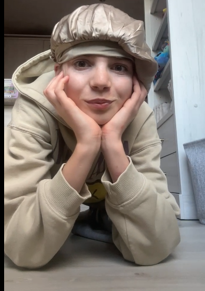
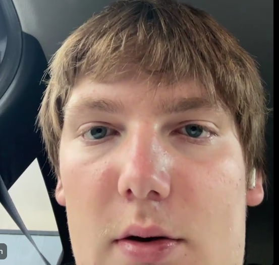
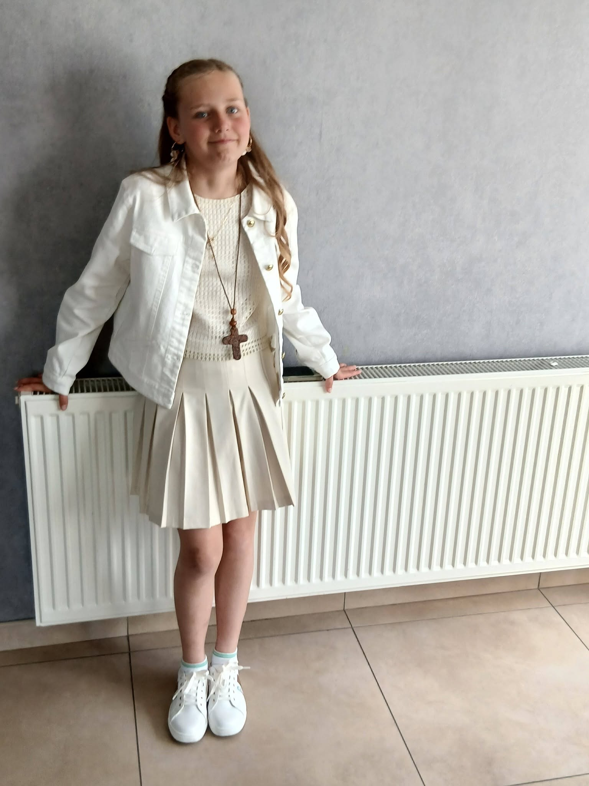

Breaking
BREAKING: Yuna Roelands is zojuist geland op luchthaven Paris-Charles de Gaulle. Volgens bronnen op de luchthaven is zij zonder incidenten door de paspoortcontrole gekomen. Haar precieze verdere verplaatsing in Parijs is op dit moment nog niet bekend. Franse media en camera’s zijn ter plaatse.
Eline Scheirlinckx, bekende van Yuna, heeft een schriftelijke verklaring laten uitgaan:

Dr. Marc Declerck, proctoloog en gespecialiseerd in extreme anatomische situaties, heeft op verzoek van meerdere media een korte, wetenschappelijke inschatting gegeven. In zijn voorlopige nota stelt hij dat “de fysieke haalbaarheid van het inbrengen van een object van de afmetingen van de Eiffeltoren vanuit medisch oogpunt als onmogelijk moet worden beschouwd”. Hij wijst op extreme risico’s op perforatie, bloedingen en levensgevaar. “Elke poging zou onmiddellijk medisch ingrijpen vereisen,” aldus Declerck.
De federale politie in België heeft laten weten dat er contact is geweest met de Franse autoriteiten over de aangekondigde reis van Yuna Roelands. “Wij volgen de situatie op de voet en wisselen informatie uit met onze Franse partners,” aldus een woordvoerder. Er is vooralsnog geen sprake van een inreisverbod of andere preventieve maatregelen.
De Société d’Exploitation de la Tour Eiffel (SETE) heeft een korte verklaring verspreid. Daarin staat dat het bedrijf “alle aankondigingen die betrekking hebben op het monument serieus neemt” en dat de veiligheid van bezoekers en het bouwwerk prioritair blijft. SETE bevestigt dat er nog geen aanvraag is ingediend voor enige bijzondere activiteit op coöperatie- of evenementenniveau.
Volgens bronnen dicht bij de familie is er intussen een vliegticket geboekt voor 15 september 2026, met aankomst op luchthaven Charles de Gaulle. Tevens zou er een hotelreservering liggen in de buurt van het Champ de Mars. De precieze vluchtgegevens worden om privacyredenen niet openbaar gemaakt.
Dr. Elke Vermeersch, klinisch psycholoog gespecialiseerd in extreme gedragingen, noemt de aankondiging “opvallend en potentieel zorgwekkend”. “Zonder de betrokkene persoonlijk te kennen, lijkt dit op een bewuste, symbolische actie die mogelijk bedoeld is als statement. Tegelijkertijd is het belangrijk dat de omgeving alert blijft op signalen van onderliggende problematiek.”
Yarne Roelands, neef van Yuna, heeft gereageerd op de aankondiging. Hij geldt binnen de familie als ervaringsdeskundige: eerder zou hij “heel Parijs” al in zijn kont hebben gestoken.

Yarne liet weten dat hij Yuna praktisch advies heeft gegeven op basis van zijn eigen ervaringen.
Een recente portretfoto van Yuna Roelands circuleert sinds vanmiddag breed. De foto toont haar met een vastberaden blik.

Volgens naasten is dit de uitstraling die hoort bij de vastberadenheid waarmee zij de geplande actie in Parijs benadert.
De Franse autoriteiten en de beheerder van de Eiffeltoren hebben laten weten dat zij de aankondiging “met aandacht volgen”. Er is nog geen formele vergunning verleend voor enige vorm van interactie met het monument buiten de normale bezoekersregels.
Een woordvoerder van de prefectuur van Parijs stelde: “We onderzoeken de situatie. De veiligheid van het monument en van alle betrokkenen staat voorop.”
In een korte, schriftelijke verklaring heeft Yuna Roelands de datum en het doel van haar reis bevestigd:
Verdere details over de precieze uitvoering van de actie heeft zij niet gegeven.
Het bericht over de plannen van Yuna Roelands verspreidde zich in korte tijd via sociale media en nieuwsplatforms. In België en Frankrijk is de aandacht groot. Meerdere media hebben contact opgenomen met de familie en met Franse instanties.